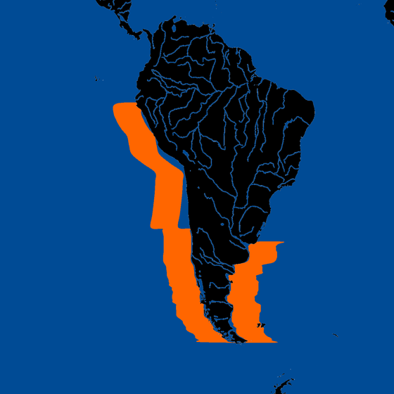

Druh v akváriu
Talířovka
jihoamerická
jihoamerická
Chrysaora plocamia
South American sea nettle
Jeden z větších druhů medúz. Obývá pobřeží Jižní Ameriky — od Peru podél Pacifiku přes Chile až po Ohňovou zemi, a severně podél atlantického pobřeží Argentiny. Výskyt úzce souvisí s Humboldtovým proudem a cyklem El Niño.
Rozšíření

Potrava
Plankton, menší medúzy, malé ryby
Predátoři
Kožatka velká, kareta zelená, kareta olivová
Zajímavost
V letech El Niño populace výrazně narůstají — biomasa může přesáhnout biomasu sardinek v celém regionu